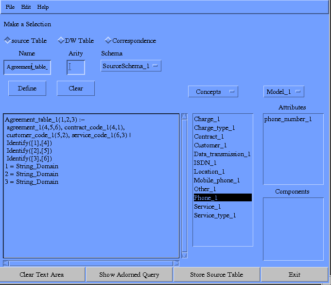
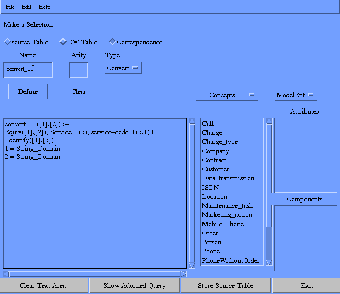
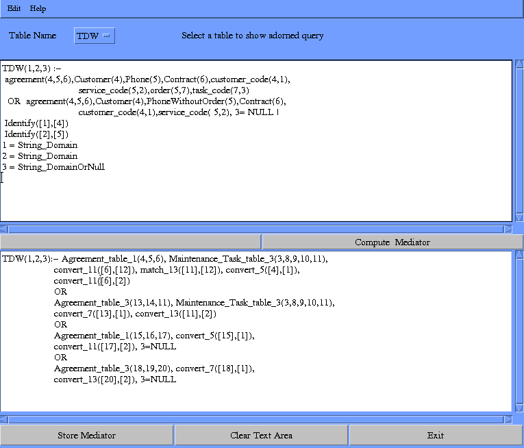
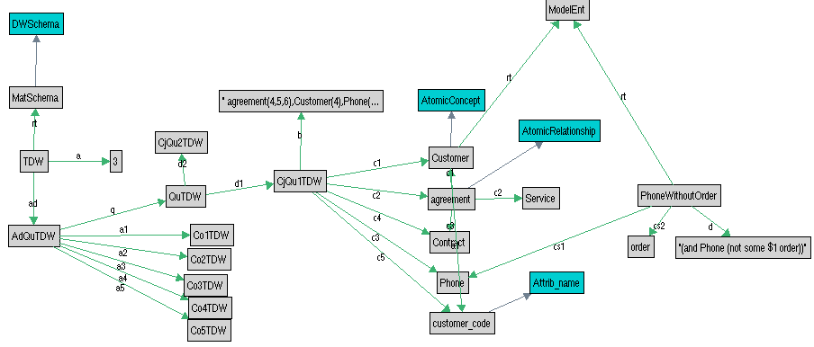
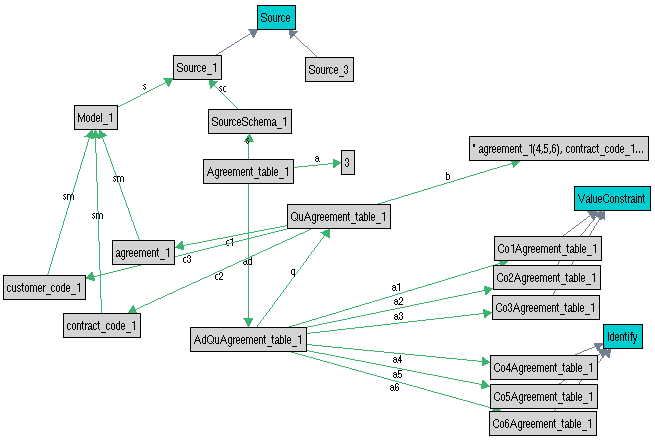
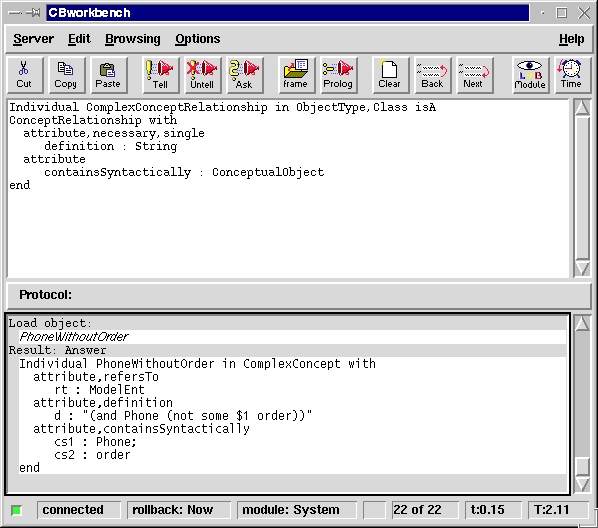

| Overview | The Metadata Repository ConceptBase |
Source Integration
and Conceptual Modelling |
Data Reconciliation | References |
Besides the optimization algorithms themselves, it is interesting to note that this physical-level optimization is fully integrated with the conceptual modeling approaches because it works on their outcomes. Conversely, the resulting optimal design is now implemented by data integration and reconciliation algorithms again derived from the conceptual perspective. The views to be materialized are initially defined over the ODS relations; there can be several qualitatively different, possibly conflicting ways to actually materialize these ODS relations from the existing sources which are generated by a further set of rewritings that can be derived from the source integration definitions [CDG+99].
The problem of data integration and reconciliation arises when data passes from the application-oriented environment to the Data Warehouse. During the transfer of data, possible inconsistencies and redundancies are resolved, so that the warehouse is able to provide and integrated and reconciled view of data of the organization. In our methodology, data reconciliation is based on (1) specifying through the notion of Interschema Correspondences how the relations in the Data Warehouse Schema are linked to the relations in the Source Schemas, and (2) designing suitable mediators for every relation in the Data Warehouse Schema. In step (1), interschema correspondences are used to declaratively specify the correspondences between data in different schemas (either source schemas or data warehouse schema). Interschema Correspondences are defined in terms of relational tables, similarly to the case of the relations describing the sources at the logical level. We distinguish among three types of correspondences, namely Conversion, Matching, and Reconciliation Correspondences. By virtue of such correspondences, the designer can specify different forms of data conflicts holding between the source, and can anticipate methods for solving such conflicts when loading the Data Warehouse. In step (2), the methodology aims at producing, for every relation in the Data Warehouse Schema, a specification of the corresponding mediator, which determines how the tuples of such a relation should be constructed from a suitable set of tuples extracted from the relations stored in the sources.
The example shows the definition of a source table (Agreement, shown in the text field in the lower left corner). The list boxes on the lower right side show the concepts of the corresponding conceptual source model and their attributes. These concepts can be used in the definition of the table. The definition of data warehouse tables is done in a similar way, using concepts from the enterprise model.

Correspondences define how values from the sources can be mapped to values in the data warehouse.

The data warehouse tables have been defined in the previous steps in terms of the conceptual enterprise model (shown in the upper part of the screenshot below). The tool can now derive a rewriting of the data warehouse table in terms of the source tables (shown in the lower part of the figure). Thus, a specification for an integrator is given.

The following screenshots show the representation of the metadata in the repository used by the data reconciliation tool. These are also screenshots of the ConceptBase GraphBrowser. The first figure shows the representation of the metadata for the data warehouse table (TDW). It is defined as a conjunctive query over the conceptual objects Customer, agreement, Contract, Phone, ...

These screenshots represents similar information for a source table (Agreement_table_1).

This is the textual representation of the metadata, presented in the ConceptBase Workbench. The upper text area in the window shows the definition of a meta class (ComplexConceptRelationship). The lower part shows the definition of a metadata object "PhoneWithoutOrder". It is defined as a complex concept: the corresponding expression in description logics is stored as string. The relationships to the concepts this expressions contains syntactically are made explicit in the repository.
